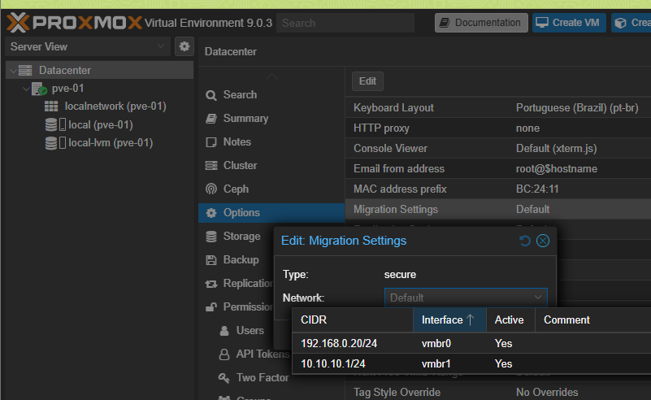

Entendendo a Migração ao Vivo
A Migração ao Vivo (Live Migration) é um dos recursos mais poderosos do Proxmox. Ela permite mover uma Máquina Virtual (VM) ou Contêiner (CT) de um servidor físico (nó) para outro sem desligá-la. Para que isso aconteça, todo o conteúdo da memória RAM da VM precisa ser copiado pela rede.
Essa tarefa gera um tráfego de rede extremamente intenso. Se essa transferência ocorrer pela sua rede principal, ela pode deixar outras aplicações lentas e até mesmo afetar a estabilidade do cluster. A tela "Migration Settings" permite que você direcione esse tráfego pesado para a sua rede dedicada de alta velocidade.
Configurando a Rede de Migração: Passo a Passo
-
Acesse as Opções do Datacenter:
No menu principal do Proxmox, selecione
Datacentere, em seguida, clique na abaOptions.  - Edite as Configurações de Migração: Encontre o item Migration Settings na lista e clique duas vezes sobre ele (ou selecione e clique em "Edit"). A janela "Edit: Migration Settings" será aberta.
-
Analise as Opções Disponíveis:
Dentro da janela, você verá duas configurações principais:
-
Type:
secure
Esta é a opção padrão e significa que os dados da migração são criptografados com SSH. É muito seguro, mas consome um pouco mais de CPU. A alternativa,insecure, é mais rápida por não usar criptografia e só é recomendada para redes fisicamente isoladas e seguras, como a sua. -
Network:
Default
Este é o campo crucial.Defaultsignifica que o Proxmox usará a tabela de roteamento para decidir qual rede usar. No menu suspenso, você verá as redes que o Proxmox detectou: a sua rede de gerenciamento (vmbr0) e a sua rede de cluster (vmbr1).
-
Type:
A Ação Recomendada: Forçando o Caminho Rápido
Para garantir que suas migrações sempre usem a rede mais rápida, você deve definir explicitamente qual caminho seguir.
- Clique no menu suspenso ao lado de Network.
- Na lista, selecione a sua rede de cluster de alta velocidade:
10.10.10.1/24. - Clique em OK para salvar a alteração.
O Resultado: Migrações em Alta Velocidade
Ao fazer essa simples alteração, você deu uma ordem direta ao Proxmox. A partir de agora, toda migração ao vivo usará a sua rede dedicada de 2.5Gbps. Os benefícios são imediatos:
- Migrações significativamente mais rápidas.
- A rede de gerenciamento fica livre para outras tarefas.
- Maior estabilidade geral para o cluster durante operações de manutenção.